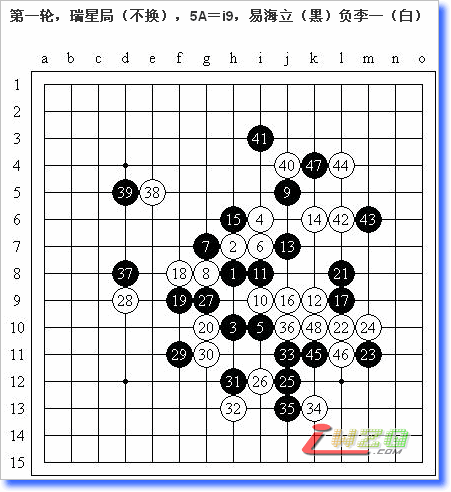
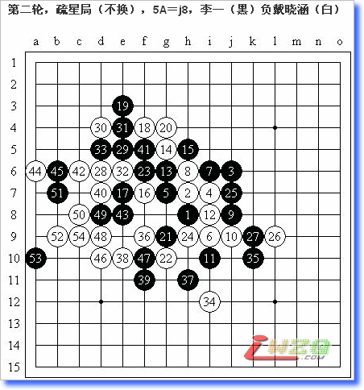

全国赛总结&九局棋评
#1 全国赛总结&九局棋评 作者：有志青年 发表时间：2007-10-28 19:14:32
就这样结束了，5胜2和2负，15名，一个我非常满意的成绩。当然我可以强调刚入学实在太忙，又有军训什么的，确实没好好准备。因此明年我一定要努力了，初步的目标定在前10。
现在下棋比以前稳了，能够长时间保持清醒进行深入的计算。本次比赛最大的收获不在计算力的提高。主要侧重于对局面的理解，对点的敏感性，以及实战的一些策略上的成熟。
心理上的弱点依然是很大的问题。真奇怪，我觉得我心理素质应该是超强的，但是总会出现乱七八糟而不能以最平和心态来对局的情况。我清楚地记得我有两次忘了拍钟，虽然频繁看钟（希望对方忘拍）的习惯使我遭受的时间损失总共也不超过1分钟，但这种低级错误在以前完全是不可能发生在我的身上的！看来以后需要加强了。可能是我以前没有遇到过太困窘的情况吧！所以一直自我感觉良好的。嗯……
说说比赛的情况吧：我的比赛可以由第四盘结束而分为上下两区。为什么这么说呢？事实上我前四盘遇到的全是高手（最弱的是段然，高校赛冠军么，哈哈～晕死……），水平和后五盘棋都不是一个级别的（樊星岑、兰志仁应该除外）。四轮之后我仅积1.5分，当时特别郁闷。最初（8月份左右）的目标是进前十；来清华之后，军训什么的，发现根本没有时间碰棋，水平下降好多，状态也不在了，能下出什么好棋呢？于是目标改前20了；但是网友们都只“祝你进入前三十！”对我打击很大啊……不过也差不多，这次很多网络棋手下凡，比赛的综合水平要比前几届全国赛高很多的。四轮之后我唯一一次定下了分数的目标——5分。鉴于我的小分可能还会比较高，这个分数是能进前三十的。6分肯定就是前20，6.5应该就前十随便进了。当时想后面5轮拿下3.5分，也还真是一个不可能的任务呢～幸运的是，对手弱了，我也越打越顺手了，尤其是秒杀兰志仁那盘，真的挺爽的。上半区和各个高手轮番苦战，非常郁闷；下半区虽也有些惊险和戏剧性，但总体来说还是顺风顺水，打出了感觉，导致我最后的分数和排名没有太低。具体情况将在我的棋评中介绍。

刚一看到第一轮的对阵表，我就有点发晕，我要对阵亲爱的传鹰大叔……第一轮！在联众混的时候就听说过他了，很崇拜。及至我认真下棋的时候，传鹰也算是QQGame里面的人物了。值得一提的是，名签上标注的是“易海力”，不知道大叔最后改过来了没有……总之一切都表明我将要面对一场富有戏剧性而又十分艰苦的全国赛。
开出瑞星的时候我还稍微放心一些，尽管我号称瑞星最差，但物极必反，最差就要认真研究，所以即使差，也比什么恒星水月山月什么的要好得多。至少不会被秒吧？我这么想着……通常也就不会交换了。白12我没有选择最古老的那个定式。你说会被逼和？不会……白32换个防点就可以脱离大定式（反正我大定式不会；值得一提的是，那基本上是大定式中唯一一步白棋多选的棋）。是黑优，让他攻去吧，我死防～～～当然，事实是，如我所料，黑13的选择！这个定式我也稍微会一点……走到白24之后，虽然还是正常，但大叔的心理可能出现了变化，可能觉得我的定式怎么熟……我估计大叔准备变招了。我在对冬瓜的一盘棋里下出了25－i12的变招，之后被冬瓜虐……因此我的希望就是，走i12吧～～～实战的25－j12让我不知所措，26的应对也是随机应变的招法，感觉即使还原回去黑棋也损了，不还原又没什么太好的连接点。，我计算了附近每个点的进攻，应该都有直接的一步防守就封死黑棋的所有线路。27后感觉黑棋还是难有作为，28果断！29、30是预想的交换，31看起来弱，但是不防不行，又没什么特别帅的防点——这样的棋出现是令对手最憋屈的了。32手……33！我瞬间就乐了，34是不假思索的一手——早就计算过的完全的防守，35无奈，36充分利用形势的手段，反正下面没东西了，优势能多点就多点吧……37防守之后，应该考虑白棋的进攻了。下面的交换，具体分析就不难发现27是最大的败笔。38是临场发现的手段，自我感觉不错，有空间感，攻防兼备。39无奈的跟住，这手下完之后我看了看传鹰，双方相对傻笑了一下。40～44的手段是我理想中的手段，不过说起来其实黑棋有很多好的防守方法，白棋完全没有机会取胜。大叔在最后时刻感觉有点心理崩溃的意思，但是我的想法也没好到哪去，本来39后觉得都要和了，毕竟这样的进攻并非我擅长的。41在防守方向的判断上稍微出了问题，正上方有空间，却没有足够的连接，右上方可是两者兼备。47一落，大叔就看到了取胜的手段。48后投子认负。

碰完传鹰再碰带小孩，我有种想找块豆腐撞死的冲动。我只好以“苦尽甘来”自我安慰（后来证明我的苦到了第四轮结束才尽，无奈了）。疏星局没换很正常，留一打很奇怪，我估计是看了10thWCAT大鱼对冈部的谱子，有点怕三打了吧？不过我也很郁
#2 Re:全国赛总结&九局棋评 作者：屏蔽 发表时间：2007-11-3 0:09:32
哦？已经转过来了啊？谢谢有志了～我还一直记挂着这事呢，没想到rifchina和这里都已经转好了。
我在学校上不了iwzq（BS清华的破网），但是有时还会在空间里写写关于五子棋的东西，有志看得上眼的话还请随意转载，呵呵，我很乐意的啊。

这篇文章原载于我的百度空间【复平面】（http://hi.baidu.com/%C6%C1%B1%CE/blog/item/df6a838261b6bbbc6d8119c2.html、http://hi.baidu.com/%C6%C1%B1%CE/blog/item/2ba4a61218eebbcdc3fd78ae.html）
转载于：
中国连珠网（http://www.rifchina.com/Article/ShowArticle.asp?ArticleID=4551）
百度五子棋吧（http://post.baidu.com/f?kz=279337771）
QQ五子棋吧（http://qbar.qq.com/u2006628）